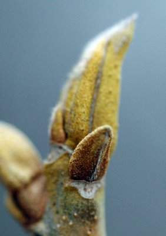
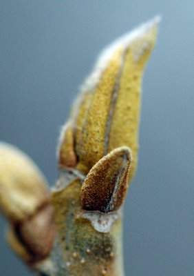

Saturday, February 25, 2006
|Friday, February 24, 2006
Reduction

Mind and land, like an old married couple, finish each other's sentences. I shelter, dark and stiff and over-carapaced, under a bent, bleached-out cattail blade. There has been a reduction, an abstraction, a simplification. A great weariness arrives and settles in, a complicated fin d'hiver melancholy, like the thick mat on the meadow floor: dry and tangled on top, wet and rotten underneath.
I am photojournalist of an ice-encrusted, ruined world. The deposed queen resides in air, in exile with her crones in waiting. Sharp shoulders bear the dead king, thin as a pall, toward a blurred horizon.
Here there is no hunger and no food. Just a few threadbare categories remain; under scrutiny, they fall away to dust. Even love. Even God. Poudraillant says the musical notation in the score of Messaien's Quartet for the End of Time.

Light shining through dust. Through ash. Through a fast.
But a heart, like a story, lies beating under the mud. Even through thick bootsoles I can feel it shouldering upward, toward the big, blunt, low winter sun. Between heart and sun, my breath and the wind conspire. Help me, I pray, I am losing count.
One ? Three ? None ?
Something's hatching in the corner of my eye. I squat, knee and ear to ground. White and green rise through me, a spring gushing from toes to fingertips to the top of my head and beyond.
The lens: my narrow, last and least boudoir.
Thursday, February 23, 2006
|
Monday, February 20, 2006
|Sunday, February 19, 2006
|
Friday, February 17, 2006
| | | |
Sunday, February 12, 2006
Fright & Flight
Back from the botanical garden Friday afternoon, I flipped open my father's laptop and connected to the internet. I'd been vaguely concerned about the possible snowstorm that the weathermen and weatherwomen had been bruiting about all week. I was due to fly home early Sunday morning. Surely the unpleasantless would be over by then. Right ?
I typed NOAA into the yahoo search box, and clicked on "go." There was the usual US map, with its color-keyed overlay. Hmmm. Eastern Massachusetts was slathered with a brilliant orange-red I'd never seen before. I consulted the key.
Blizzard Warning
Blizzard ? BLIZZARD ? BLIZZARD ?
Yes, blizzard. A blizzard that, in addition, had booked the same itinerary as my return flight. Sunday morning.
NOOOOOOOOO !!!!!
As the late sun glinted off the calm waters of the gulf of Mexico up through the balcony doors, I flew into high panic mode. Now what ?
The next half hour is a psychotic blur of unresponsive websites, tenuous cellular connections, byzantine phone menus, maddeningly calm voice-recognition BOTs sadly telling me they did not understand me, and singularly obtuse customer service representatives emerging from their addled haze only to dispense incorrect information; my Dad, feeling my panic, sat across from me at the table mechanically spooning raisin bran and soymilk into his mouth as he watched me freak: clink, slurp, clink, slurp, clink, slurp. Across the kitchen the little green nautical motif clock -- the one I'd had to disable the night before in order to sleep -- went TICK TICK TICK TICK. Can clocks crescendo ? This one did, I swear. My palms were sweating. All of Southwestern Florida was probably vying for the one remaining ticket back to Boston ! And, if I did get that ticket, it would probably cost thousands of dollars ! And what were the penalties for changing one's itinerary, anyway ?
Cue Bernard Hermann Hitchcock string motif. Screech ! Screech ! Screech !
Doesn't Camus' L'Etranger begin with the sun glinting off a knife blade ?
I eventually reached a pleasant Delta Airlines representative on my Dad's landline. Within moments she'd booked me a direct flight from Florida to Boston for Saturday morning, well before the storm's expected arrival. I would leave Florida an hour and a half later than my originally scheduled flight, and arrive in Boston more than an hour earlier. What, no long overlay in Atlanta ? I took down the flight number, unable to believe my good fortune.
May I help you with anything else ? she asked.
Uh, the price ? I ventured.
No additional cost. And, because of the storm, we've waived the penalties.
Wow.
So here I am, and here's the snow.
And my forty hour Florida vacation -- did I and my camera dream it ?
Flor(id)a
Friday my Father, as promised, drove us to a botanical garden. En route I noticed "Panther Crossing" signs by the highway, and placards protruding from the water of the roadside bay warning boaters of a "manatee zone."
It was clear that I was not in Massachusetts anymore. My Dad, gleefully zipping along in his Saab, announced that one's age determines one's personal speed limit. He'd just turned eighty. I white-knuckled it in the back seat. I'd just turned fifty four miles per hour. Didn't Saab start out making jet engines ? Had they installed one by accident in my Dad's car ?
After the obligatory tourist picture of my parents as wild game hunters, we set out through the park. My eyes, calibrated by New England end-of-winter earth tones, were dazzled. Every parameter -- white balance, saturation, contrast -- would have to be reset. Photographers use an 18% "gray card" to calibrate exposure. That wouldn't do at all. I'd clearly have to find something else.

This parrot would suffice.
I hadn't seen purple like ths since the vetch disappeared last fall,
or bees for months and months,
or a botanical apparatus as brilliant and complex as this bird of paradise's, ever,
Could this be a pastel cousin of the somber hawthorns by the Charles River ?
Have I ever seen such a duskily gorgeous anther and filament ?
This is, I think, a banana flower. There's nothing like it in the woods back home.
But this stalk of little lipped blossoms reminded me of helleborine or gill-over-the ground.
And succulents. Are there succulents In New England ? Does skunk cabbage count ?
One thing's for certain: this is a southern cousin of milkweed. It has to be. Amazing to see the subtle pink and white peg-like flowers rendered in blazing orange and yellow !
But nothing in the woods I know is as beautifully thatched as this breastplate-like palm.
And, as if the pink were not enough, this elaborate flower has little purple tongues....
Some kind of reed ? I ventured, thinking of phragmites.
Papyrus, my Mother said, reading from a low placard.
Coconuts ! crowed my Dad, pointing up a palm.
We, all three of us, were enraptured by the exotic plants.
I made sure to learn the name of this one: Mexican cardboard plant.
Finally, I'd reset my eyes. All four of them.
How would I ever face the end-of-winter, trash strewn riverbanks of Massachusetts ?
It was clear that I was not in Massachusetts anymore. My Dad, gleefully zipping along in his Saab, announced that one's age determines one's personal speed limit. He'd just turned eighty. I white-knuckled it in the back seat. I'd just turned fifty four miles per hour. Didn't Saab start out making jet engines ? Had they installed one by accident in my Dad's car ?
After the obligatory tourist picture of my parents as wild game hunters, we set out through the park. My eyes, calibrated by New England end-of-winter earth tones, were dazzled. Every parameter -- white balance, saturation, contrast -- would have to be reset. Photographers use an 18% "gray card" to calibrate exposure. That wouldn't do at all. I'd clearly have to find something else.

This parrot would suffice.
I hadn't seen purple like ths since the vetch disappeared last fall,
or bees for months and months,
or a botanical apparatus as brilliant and complex as this bird of paradise's, ever,
Could this be a pastel cousin of the somber hawthorns by the Charles River ?
Have I ever seen such a duskily gorgeous anther and filament ?
This is, I think, a banana flower. There's nothing like it in the woods back home.
But this stalk of little lipped blossoms reminded me of helleborine or gill-over-the ground.
And succulents. Are there succulents In New England ? Does skunk cabbage count ?
One thing's for certain: this is a southern cousin of milkweed. It has to be. Amazing to see the subtle pink and white peg-like flowers rendered in blazing orange and yellow !
But nothing in the woods I know is as beautifully thatched as this breastplate-like palm.
And, as if the pink were not enough, this elaborate flower has little purple tongues....
Some kind of reed ? I ventured, thinking of phragmites.
Papyrus, my Mother said, reading from a low placard.
Coconuts ! crowed my Dad, pointing up a palm.
We, all three of us, were enraptured by the exotic plants.
I made sure to learn the name of this one: Mexican cardboard plant.
Finally, I'd reset my eyes. All four of them.
How would I ever face the end-of-winter, trash strewn riverbanks of Massachusetts ?
Above Water
I feel a certain disconnected joy when I'm in transit miles above the earth. A blissful detachment. And traveling alone compounds it: I am responsible for no one and nothing. I surrender myself utterly to the pilot. I am beyond reach.
And if I have, as I did Thursday, a window seat and a clear day, all the better. Factor in the camera ? I was in heaven. The world, so far below, became otherworly. Even if Manhatten island retained its semiotic, cartographic familiarity, distance and light transformed it to a dark city with a silver halo.
A town like a mandala.
A neighborhood densely embroidered with houses. A sandy tract like a taut cloth where more will be stitched.
Coast. The dynamic interface of sea and land. Perpetual revision.
Two fragile human spans.
What was that strange underwater fold ? An unexpected speck shows up in the photo. I enlarge it. The pixels unpack, bloom. It's a person in a rowboat.
I landed, then ascended again into my parents' wintertime seaside eyrie.
I looked down off the balcony. Fifteen flights up. I felt the usual frisson of vertigo, and backed away. What if... and I could...
The imagination -- envisioning, willing -- can be a terrible thing.
I put the camera down. There was a 35mm lens on my digital Nikon, practically equivalent to a film camera's 50mm "normal lens." It's the focal length that most approximates the field of view of the human eye. It had been a long day. A long, vertical day.
Tomorrow, proposed my Dad, we'd visit a botanical garden.
I'd bring my macro lens. That would balance things out.
And if I have, as I did Thursday, a window seat and a clear day, all the better. Factor in the camera ? I was in heaven. The world, so far below, became otherworly. Even if Manhatten island retained its semiotic, cartographic familiarity, distance and light transformed it to a dark city with a silver halo.
A town like a mandala.
A neighborhood densely embroidered with houses. A sandy tract like a taut cloth where more will be stitched.
Coast. The dynamic interface of sea and land. Perpetual revision.
Two fragile human spans.
What was that strange underwater fold ? An unexpected speck shows up in the photo. I enlarge it. The pixels unpack, bloom. It's a person in a rowboat.
I landed, then ascended again into my parents' wintertime seaside eyrie.
I looked down off the balcony. Fifteen flights up. I felt the usual frisson of vertigo, and backed away. What if... and I could...
The imagination -- envisioning, willing -- can be a terrible thing.
I put the camera down. There was a 35mm lens on my digital Nikon, practically equivalent to a film camera's 50mm "normal lens." It's the focal length that most approximates the field of view of the human eye. It had been a long day. A long, vertical day.
Tomorrow, proposed my Dad, we'd visit a botanical garden.
I'd bring my macro lens. That would balance things out.
Wednesday, February 08, 2006
|Sunday, February 05, 2006
The Idea Of South
I dreamed last night that I was late leaving for the airport. It was 12 o'clock and the plane was departing at one. Fretting, I packed my suitcase with can after can of catfood. In the hotel lobby my colleague's usually disheveled and deranged patient, now strangely glamorous and coherent, stopped me to tell me something important. Then I woke up.
It was a classic dream, a major subcategory of anxiety dream, the being-late-for-something dream, right up there with forgetting-the-lines-of-the-play dream and the naked-in-public dream. And I dreamed it because I am about to take a trip.
I am going to, of all places, Florida. Sunny, warm, green, bright Florida. Land of white beaches, blue skies, and buff expanses of oiled and tanned skin. Lush land of fronds and snakes and gators. Can you imagine me, bog-woman of the north, descending upon Florida like some doomed invasive species ? I cannot.

I'm going to visit my parents, who are wintering there. Florida is SO off my radar I had to consult a map. They're on the Gulf-facing coast, just above the everglades. That's South. Serious south. Souther than I've ever been.
You can bring your camera said my Dad, playing on one of my weaknesses. If that hadn't worked, he'd have invoked a freezer full of vanilla Soy Delicious. He knows all my Achilles heels.
It's February, a significant month, the month I in which was born and the month of my first and doomed marriage. The Southest I've ever been occured on the honeymoon of that doomed liaison. We'd flown to Los Angeles -- which counts as West, not South -- to visit P's father. During that trip we spent a few hours in Tijuana. I have -- vide supra -- documentary evidence. Dig the rosy cheeked young bride, avec pinata: that's me, February 1979, South of the Border, 33 degrees latitude. Now I'm going even farther South. 26 degrees. That's practically equatorial.
I'm flying out, alone, this Thursday. On my birthday.
I think of Florida and I think of heat. Of unrelenting sun. Of humidity. Of crowds of cheerful, tanned people who like things like volleyball and Disneyland. People in shorts and sleeveless shirts. I think of Governor Jeb, the porcine sib of our simian-in-chief. I think of these things and I am appalled.
Whenever I have dreamed over maps I have always dreamed North. The Northwest Territories, Alaska, Finland, Siberia. Harsh, dark, northerly lands of taigas and tundras. Lands that make Boston -- latitude 43 degrees -- seem virtually tropical. But now, on this significant day, this birth-day, I will veer South, swapping stiff, dried tansy stalks and rattling oak trees for frangipani and mangrove swamps.
Dislocation. Disorientation. It could do me good. Packing tins of catfood, I prepare for my vision quest.
I will ingest the sacred Soy Delicious; and I will become, O Shamanic Daddy-O, more glamorous and coherent than I've ever dreamed.
Wednesday, February 01, 2006
Losing My Religion
It was Sunday morning. I thought, as usual, and not without envy, of churchgoers, and my on again off again flirtations with organized transcendence. It had all boiled down, in the end, to faith, that much touted commodity that I, apparantly, lacked. As much of a whizz kid as I'd become in reading religious language as a metaphor-rich poem, I also realized that was not the intent of the founders, as it were. Christ, to most Christians, was not just shorthand for our universal participation in the Ground Of Being, but a specific, privileged individual who, alone, "incarnated" and gave us access to a being known as "God." And who, if we "believed" or "had faith" in him would "save" us from death: et exspecto resurrectionem mortuorem.
And I believe in/ expect/ hope for the resurrection of the dead !
That is damned hard to translate.
So I didn't go to church with my Bible, I went to the woods with my camera.
I'd been in the woods for an hour taking pictures and I was in paradise. It was a mild day, the snow cover was soft underfoot and Beaver Brook was bubbling merrily along. The sun was a glowing silver disc behind thin clouds, and the photography was going GREAT. Uncannily great, in fact. I had my favorite lens, the Tamron 90mm f/2.8 macro, and I was shooting aperture priority at some AMAZINGLY tiny f stops. f/22, f/32 in fact, and the shutter speeds that the camera was choosing were still blazingly fast. Man, just think of the depth of field I'd be getting ! With no motion artifact whatsoever !
I peered at the meter readings: 1/4000 sec, 1/8000 sec ! It even began to tell me I was in overexposure territory !
Overexposed ? I'd never seen that before in aperture priority. What could it mean ? I looked around at the snow. I looked up at the silver glowing disc behind the thin clouds. I tried to remember what I'd read earlier that week in my new book "Understanding Exposure."
After some deliberation I concluded that a fortunate conjunction of sun, diffusing clouds and reflective snow must have produced a miraculously excellent light. I was, most likely, in some kind of rare exposure heaven. I pictured hosts of sparkling photons zipping about, bouncing off the snow, the trees, the water, the clouds, and making a brilliant beeline into my camera's miotic little pupil.
Having settled that, I slogged off through the snow, stopping to crouch and lean into weeds and pods, confident I'd get every plump detail, and not just the piddling, razor thin slices of focus that wider apertures like f/3.5 and f/5.6 created.
I would capture every overlapping scale on the catkins,
and I would capture three whole tansy florets with the denuded discs and stiff rays all in perfect focus.
I would capture the bristling fuzz of the brilliant yellow buds

and whole leaves, without curled edges melting into the universe of blur in front of and behind the narrow slice of focus.
And, as for the strange, hollow plants I'd photographed last fall on the embankment beside the railroad tracks -- this time I'd capture them in all their three-dimensional splendor --
like the gorgeous, ruined Corinthian columns of a fallen mossy civilization !
And all without the messy inconvenience of a tripod.
I was ecstatic, transported; I was singing hymns to the blessed, miraculous radiance ! Oh, as the prayerbook says, phos hilaron -- gracious light ! There must be a whole chapter in "Understanding Exposure" about snowlight, the best light -- I'd have to make sure to check that out later. Why, I bet even Ansel Adams must have written about it !
Later, anxious to see the brilliant, crisp images that the miraculous cloud-diffused snowlight had created, I downloaded the image files to my computer.
When I opened the first image, an oddly bright, in-focus but wierdly fuzzy aster, the exif data caught my eye. Yes, there it was, f/22. And, yes, there was the shutter speed, a respectable 1/500.
And then, to my dismay, I remembered what "Understanding Exposure" had said. What it had said right off the bat. Over and over and in bold print.
"A correct exposure is a simple combination of three important factors: aperture, shutter speed and ISO."
I'd shot each and every picture at ISO 1600.
And instead of reasoning it through -- remembering that making the camera eight times more sensitive to light than normal would allow faster shutter speeds and smaller apertures -- I concluded that I'd been blessed with some anomalous, even miraculous ambient luminosity.
I looked at my pictures. Yup, there was the fabulous depth of field. But there, also, was the fuzzy noise that shooting at high ISOs creates.
I was disappointed. I'd wanted to believe in the miraculous and beneficent cloud-diffused snowlight. In fact I had, in face of all reason and experience -- I knew about ISO and I'd photographed many a time in veiled winter light -- actually believed in it for a few blissful hours.
And it was as wonderful as faith must be wonderful.
And I believe in/ expect/ hope for the resurrection of the dead !
That is damned hard to translate.
So I didn't go to church with my Bible, I went to the woods with my camera.
I'd been in the woods for an hour taking pictures and I was in paradise. It was a mild day, the snow cover was soft underfoot and Beaver Brook was bubbling merrily along. The sun was a glowing silver disc behind thin clouds, and the photography was going GREAT. Uncannily great, in fact. I had my favorite lens, the Tamron 90mm f/2.8 macro, and I was shooting aperture priority at some AMAZINGLY tiny f stops. f/22, f/32 in fact, and the shutter speeds that the camera was choosing were still blazingly fast. Man, just think of the depth of field I'd be getting ! With no motion artifact whatsoever !
I peered at the meter readings: 1/4000 sec, 1/8000 sec ! It even began to tell me I was in overexposure territory !
Overexposed ? I'd never seen that before in aperture priority. What could it mean ? I looked around at the snow. I looked up at the silver glowing disc behind the thin clouds. I tried to remember what I'd read earlier that week in my new book "Understanding Exposure."
After some deliberation I concluded that a fortunate conjunction of sun, diffusing clouds and reflective snow must have produced a miraculously excellent light. I was, most likely, in some kind of rare exposure heaven. I pictured hosts of sparkling photons zipping about, bouncing off the snow, the trees, the water, the clouds, and making a brilliant beeline into my camera's miotic little pupil.
Having settled that, I slogged off through the snow, stopping to crouch and lean into weeds and pods, confident I'd get every plump detail, and not just the piddling, razor thin slices of focus that wider apertures like f/3.5 and f/5.6 created.
I would capture every overlapping scale on the catkins,
and I would capture three whole tansy florets with the denuded discs and stiff rays all in perfect focus.
I would capture the bristling fuzz of the brilliant yellow buds

and whole leaves, without curled edges melting into the universe of blur in front of and behind the narrow slice of focus.
And, as for the strange, hollow plants I'd photographed last fall on the embankment beside the railroad tracks -- this time I'd capture them in all their three-dimensional splendor --
like the gorgeous, ruined Corinthian columns of a fallen mossy civilization !
And all without the messy inconvenience of a tripod.
I was ecstatic, transported; I was singing hymns to the blessed, miraculous radiance ! Oh, as the prayerbook says, phos hilaron -- gracious light ! There must be a whole chapter in "Understanding Exposure" about snowlight, the best light -- I'd have to make sure to check that out later. Why, I bet even Ansel Adams must have written about it !
Later, anxious to see the brilliant, crisp images that the miraculous cloud-diffused snowlight had created, I downloaded the image files to my computer.
When I opened the first image, an oddly bright, in-focus but wierdly fuzzy aster, the exif data caught my eye. Yes, there it was, f/22. And, yes, there was the shutter speed, a respectable 1/500.
And then, to my dismay, I remembered what "Understanding Exposure" had said. What it had said right off the bat. Over and over and in bold print.
"A correct exposure is a simple combination of three important factors: aperture, shutter speed and ISO."
I'd shot each and every picture at ISO 1600.
And instead of reasoning it through -- remembering that making the camera eight times more sensitive to light than normal would allow faster shutter speeds and smaller apertures -- I concluded that I'd been blessed with some anomalous, even miraculous ambient luminosity.
I looked at my pictures. Yup, there was the fabulous depth of field. But there, also, was the fuzzy noise that shooting at high ISOs creates.
I was disappointed. I'd wanted to believe in the miraculous and beneficent cloud-diffused snowlight. In fact I had, in face of all reason and experience -- I knew about ISO and I'd photographed many a time in veiled winter light -- actually believed in it for a few blissful hours.
And it was as wonderful as faith must be wonderful.

Links
- juan cole
- duemer
- brtomblog
- brtomtwo
- dumbfoundry
- mole
- PaperFrog.com
- Cassandra Pages
- PureLandMountain
- hermitary
- meetingbrook
- philocrites
- hoarded ordinaries
- prairie point
- Via Negativa
- Heart @ Work
- Eschaton
- Frumpy Professor
- Fatshadow
- susurradrluz
- sbpoet
- timegoesby
- depth-witness
- seekingclarity
- self-winding
- eeksypeeksy
- woodslot
- switchedatbirth
- middlewesterner
- pomegranates&paper
- postcards2moi
- mindfullife
- urbanist
- Zippy the Fish
- Laughing~Knees
- nineweaving
- JCA
- thoreau
- adventus
- creeknorth
- NEviews
- frizzylogic
- 3rdhouseparty
- churchless
- thegarden
- oneword
- notnativefruit
- alwaysmorebeyond
- jackzen
- suzanna
- apparantlynothing
- chimesatmidnight
- blaugustine
- sweetpeakate
- thegarden
- q'pop
- spiritblooms
- flamingohouse
- onehouse
- ladybugsleaf
- tothequiet
- shokai
- olderandgrowing
- robe&bowl
- beyondthefields
- returntothecenter
- ravengrrl
- alwaysmorebeyond
- sunpatch ***
- email me

Previous Posts
- Other People's Gardens
- -culture
- Counterweight
- In Which We Know What We Like
- Last Things
- Some Clever And Colorful Cousins
- A Ghost, A Post and Zelig
- Relevant Lines
- Some Saprophytes and an Eremite
- Between
Archives
- 08/01/2003 - 08/31/2003
- 09/01/2003 - 09/30/2003
- 10/01/2003 - 10/31/2003
- 11/01/2003 - 11/30/2003
- 12/01/2003 - 12/31/2003
- 01/01/2004 - 01/31/2004
- 02/01/2004 - 02/29/2004
- 03/01/2004 - 03/31/2004
- 04/01/2004 - 04/30/2004
- 05/01/2004 - 05/31/2004
- 06/01/2004 - 06/30/2004
- 07/01/2004 - 07/31/2004
- 08/01/2004 - 08/31/2004
- 09/01/2004 - 09/30/2004
- 10/01/2004 - 10/31/2004
- 11/01/2004 - 11/30/2004
- 12/01/2004 - 12/31/2004
- 01/01/2005 - 01/31/2005
- 02/01/2005 - 02/28/2005
- 03/01/2005 - 03/31/2005
- 04/01/2005 - 04/30/2005
- 05/01/2005 - 05/31/2005
- 06/01/2005 - 06/30/2005
- 07/01/2005 - 07/31/2005
- 08/01/2005 - 08/31/2005
- 09/01/2005 - 09/30/2005
- 10/01/2005 - 10/31/2005
- 11/01/2005 - 11/30/2005
- 12/01/2005 - 12/31/2005
- 01/01/2006 - 01/31/2006
- 02/01/2006 - 02/28/2006
- 03/01/2006 - 03/31/2006
- 04/01/2006 - 04/30/2006
- 05/01/2006 - 05/31/2006
- 06/01/2006 - 06/30/2006
- 07/01/2006 - 07/31/2006
- 08/01/2006 - 08/31/2006
- 09/01/2006 - 09/30/2006
- 10/01/2006 - 10/31/2006


{kind=link}
{kind=link}
{kind=link}
{kind=link}
{kind=link}
{kind=link}
{kind=link}
{kind=link}
{kind=link}
{kind=link}
{kind=link}
{kind=link}
{kind=link}
{kind=link}
{kind=link}
{kind=link}
{kind=link}
{kind=link}
{kind=link}
{kind=link}
{kind=link}
{kind=link}
{kind=link}
{kind=link}
{kind=link}
{kind=link}
{kind=link}
{kind=link}
{kind=link}
{kind=link}
{kind=link}
{kind=link}
{kind=link}
{kind=link}
{kind=link}
{kind=link}
{kind=link}
{kind=link}
{kind=link}
{kind=link}
{kind=link}
{kind=link}
{kind=link}
{kind=link}
{kind=link}
{kind=link}
{kind=link}
{kind=link}
{kind=link}
{kind=link}
{kind=link}
{kind=link}
{kind=link}
{kind=link}
{kind=link}
{kind=link}
{kind=link}
{kind=link}
{kind=link}
{kind=link}
{kind=link}
{kind=link}
{kind=link}
{kind=link}
{kind=link}
{kind=link}
{kind=link}
{kind=link}
{kind=link}
{kind=link}
{kind=link}
{kind=link}
{kind=link}
{kind=link}
{kind=link}